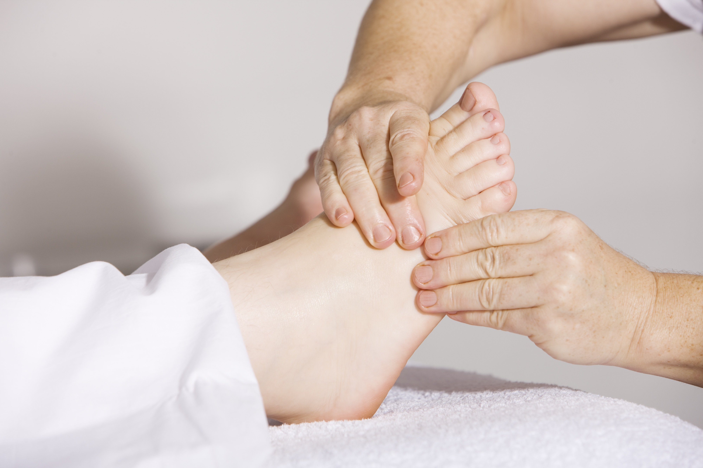

El masaje es una forma de manipulación de las capas superficiales y profundas de los músculos del cuerpo utilizando varias técnicas, para mejorar sus funciones, ayudar en procesos de curación, disminuir la actividad refleja de los músculos, inhibir la excitabilidad motoneuronal, promover la relajación y el bienestar y como actividad recreativa.
Probablemente es la herramienta terapéutica más antigua que el ser humano utilizó para proporcionarse un recurso natural contra el dolor. Su evolución y uso ha sido parejo al de la sociedad, hasta convertirse en la técnica de tacto estructurado que hoy conocemos.
Existen diversos tipos de masaje, desde el de relajación hasta el afectivo o sensual; pasando por el específicamente terapéutico (masoterapia) del ámbito sanitario y el del ámbito deportivo, destinado a mejorar la actividad física.
